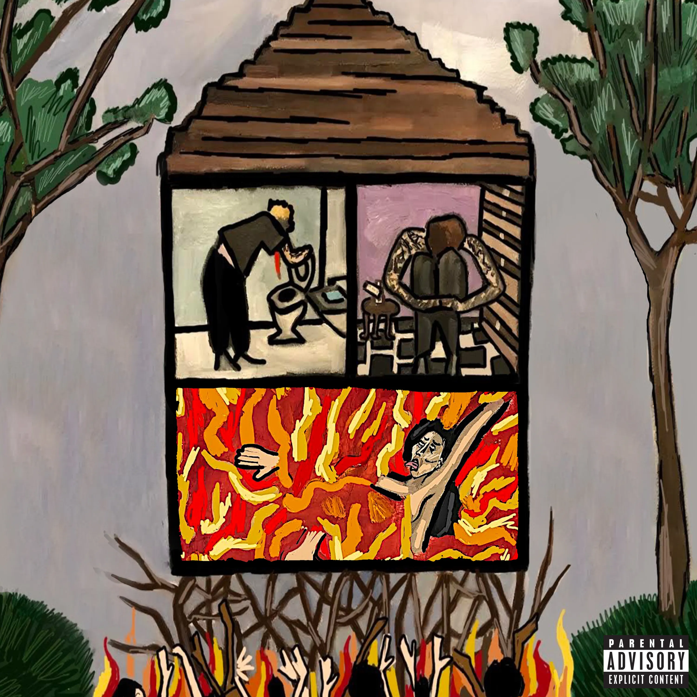

Now comes the more intense music on the list. Note, the lyrics in any of the songs produced by $uicideBoy$ is rather gut wrenching.
Even in my love for music, I'll hardly attempt to show this music to the people who love me. For if they heard it I'm afraid they would be worried for me.
None the less, I love them. The two artists, Ruby and Scrim, create hard emo music that lead me away from drug use. Just like Jarad, these two both suffered from mental battles that they attempted to resolve through drug use.
To me, wise words guide me through life. Learning from mistakes is no different. So when I hear the countless poor decisions being made, I take note and become wiser because of it.